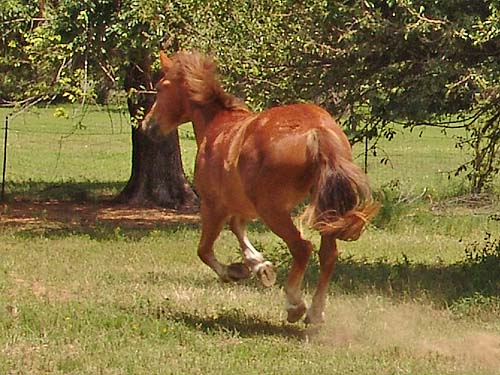

He's right around 15 hh now (same
as Thuy) and has a lot of substance and power.
He and Miaren are constantly playing.

He's not as wide as Thuy, yet...
Sometimes the instigator.
Still a bit long bodied, but he has
some growing to do to get balanced.
He'll be an interesting horse in a
year. Hard to tell if he'll get much taller, but I bet he gets more substance.
So far he's more like Thuy. Not really friendly, but tolerant.
Big feet and a double back. No need
to worry if he's getting enough groceries...